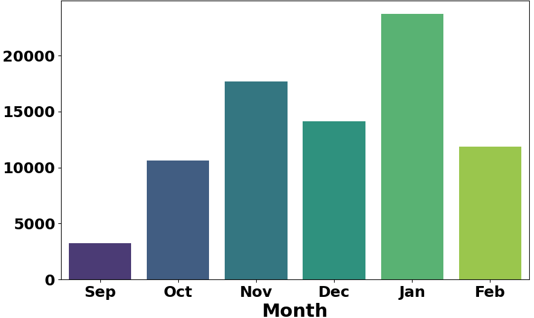
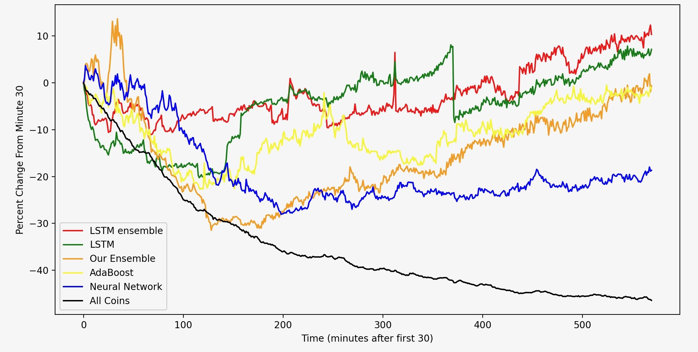

Predicting Meme Coin Rugs (collaborator: Alex Bloom)
Dataset & Features
- Over 20,000 coins are launched daily on Solana, with ~1,000 migrating each day.
- Data compiled for every single coins that migrated during the Sept 2024 – March 2025 period.
- Features include minute-by-minute OHLCV for the first 10 hours, market data (Bitcoin and Solana), and background on coin creators.

Coin Distribution by Month
Methodology
- Coins are labeled safe (class 1) if they maintain at least 95% of their value from minute 30 to 600.
- Data split: Training (56%), Validation (29%), Testing (15%).
- Models tested: AdaBoost, Custom Ensemble, Neural Network, modified LSTM, and an LSTM Ensemble.
- The LSTM Ensemble—combining 5 tuned LSTMs via majority voting—delivered the best performance.
Results
- Baseline: 0.23 precision; average return: -46%.
- AdaBoost: 0.48 precision; average return: -1%.
- Custom Ensemble: 0.51 precision; average return: +1%.
- Neural Network: 0.34 precision; average return: -19%.
- LSTM: 0.62 precision; average return: +6%.
- LSTM Ensemble: 0.68 precision; average return: +11%.

Average Returns of Coins Predicted by Each Model